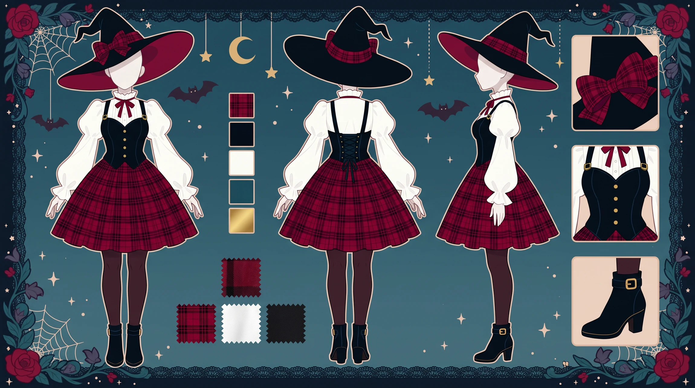
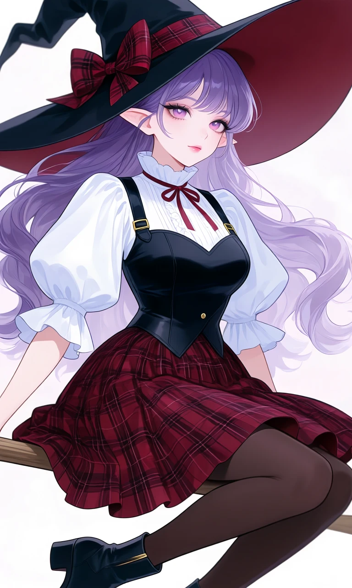
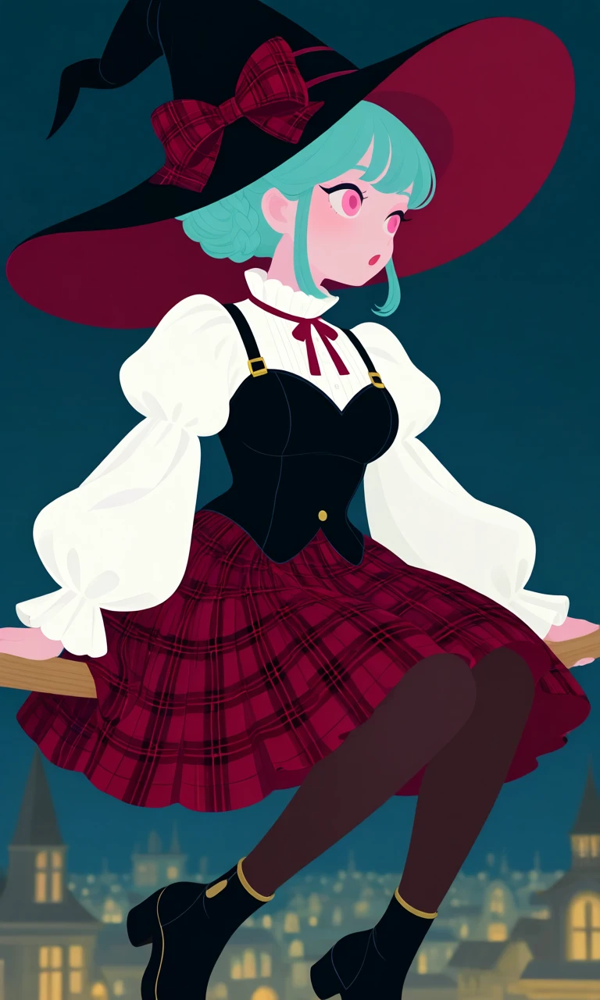

Tartan & Tarot

Outfit Prompt
Adorable black-and-crimson-red plaid witch outfit, whimsical storybook witch fashion, cute feminine gothic aesthetic, vintage-inspired design.
An oversized black witch hat with a tall, slightly bent and floppy pointed crown, a wide sweeping brim, and a deep crimson-red underside. A large crimson-red and black tartan plaid ribbon bow decorates the front of the hat, with a black band wrapped around the base of the crown.
A crisp white Victorian-inspired blouse with a high ruffled standing collar and short, extremely voluminous balloon puff sleeves. The sleeves have rounded, gathered silhouettes, ending just above the elbows in narrow white ruffled cuffs. A small crimson-red ribbon is tied into a delicate bow beneath the collar, with two thin ribbon tails hanging down the chest.
A fitted black pinafore-style dress worn over the white blouse, featuring a structured black bodice and an attached crimson-red plaid skirt.
The black bodice has a sweetheart-shaped upper edge, a gently curved neckline across the bust, and two narrow black shoulder straps extending over the blouse. Small golden rectangular buckles connect the straps to the front of the bodice. The smooth black fabric follows the waist and torso, with a subtly curved front panel and a tiny round golden button near the center waist.
The attached skirt is made from deep crimson-red and black tartan plaid fabric, featuring thin intersecting black lines forming a traditional checked pattern. The skirt begins at the natural waist and flares outward into a short, full A-line silhouette ending above the knees. Soft gathered pleats create a playful, gently rounded shape with natural fabric folds.
Dark opaque chocolate-black tights covering both legs.
Simple black ankle boots with fitted ankle shafts, softly rounded toes, short chunky heels, and subtle golden trim around the upper edges.
Coordinated black, crimson-red, and crisp white color palette with delicate golden accents. Oversized floppy witch hat with matching plaid bow, high ruffled blouse collar, voluminous puff sleeves, delicate red ribbon necktie, fitted black pinafore bodice with gold-buckled straps, and full red tartan plaid skirt.
Charming vintage storybook witch aesthetic, playful feminine gothic fashion, soft fabric textures, elegant proportions, and whimsical fantasy-inspired details.
Outfit Examples



